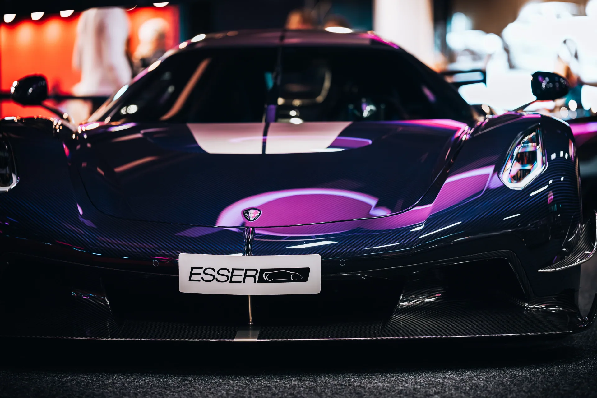
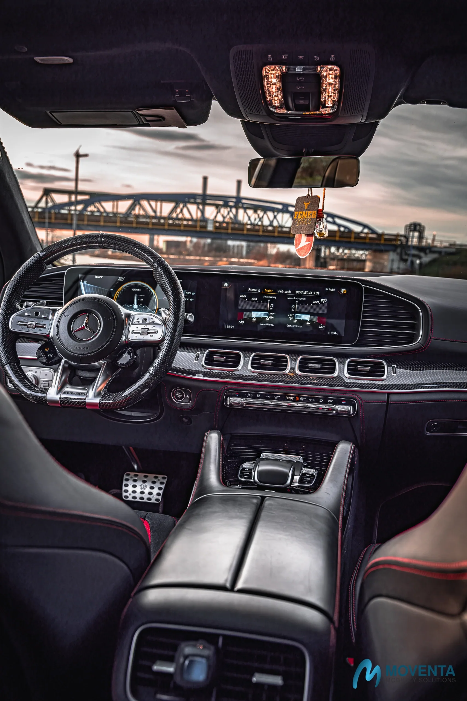

01 · Stand & Silhouette
Die ruhige Bildbühne
Bike pur — Proportionen, Linienführung, Haltung. Gesetztes Licht, klare Winkel. Bereit für Header, Print und Werkstatt-Wand.
Motorrad Verkaufsfotos in Düsseldorf: Motorrad Fotografie in Düsseldorf: Schärfe auf Maschine und Haltung — Silhouette, Mechanik, Details und Fahrerbilder werden als kraftvolle Serie geplant, nicht als beliebiges Bike-Foto. Düsseldorf wird als lokaler Suchraum mit klarer Planung, Lichtfenster und passender Nutzung der Bildserie verstanden.
Ein Motorrad muss auch im Stand Spannung tragen. Ich arbeite mit gesetzten Winkeln, kontrolliertem Licht und einer ruhigen Bildsprache — Mechanik, Material und Haltung wirken sofort, ohne Effektpose.
Einsatz: Social, Website, Verkauf, Werkstatt, Kampagne. Sie erhalten Dateien für Web und Druck — bereit für Reels, Story, Magazin und Print, im einheitlichen Bild-Look.
Shooting anfragen →Sechs Bildtypen, die ich anbiete — vom ruhigen Standschuss bis zum Pan-Shot in der Schräglage. Jede Serie wird aus diesen Modulen zusammengestellt, je nach Bike, Anlass und Verwendung.
Bike pur — Proportionen, Linienführung, Haltung. Gesetztes Licht, klare Winkel. Bereit für Header, Print und Werkstatt-Wand.

Nahaufnahmen, die Material, Verarbeitung und Charakter ehrlich zeigen — für Custom-Doku, Händlerseiten und redaktionelle Strecken.
Fahrer und Bike zusammen — Haltung, Helm, Hände am Lenker. Porträt-Logik trifft Maschine, gerne vor Ort oder am Werkstatttor.
Mitziehaufnahmen aus der Kurve, sauber gezogene Pan-Shots — Geschwindigkeit als Bild, nicht als Behauptung. Strecke nach Absprache.

Bildserien mit Stimmung — Gegenlicht, Dämmerung, Werkhalle, Asphalt nach Regen. Editorial-Look für Magazin und Marken-Kampagne.

Hochformat wird von Anfang an mitgeplant — eine Aufnahme, zwei Formate. Reels-, Story- und 9:16-Cuts direkt aus dem Set.
Sechs kuratierte Motorrad-Bilder aus jüngeren Serien. Klicken zum Vergrössern.
Vom ersten eigenen Bike bis zur Kampagne — jede Serie wird auf Maschine, Marke und Nutzung zugeschnitten.
Du erkennst dein Setting wieder? Lass uns sprechen.
Projekt anfragen →Motorrad steht selten allein. Schau dir die anderen Disziplinen an — gleicher Anspruch, anderer Bildfokus.
Diese Kategorie ist Teil eines bewusst getrennten Fotografie-Clusters: Fahrzeug, Mensch und Raum bleiben eigenständige Suchintentionen, sind aber intern so verbunden, dass Nutzer schnell in den passenden Bildbereich wechseln können.